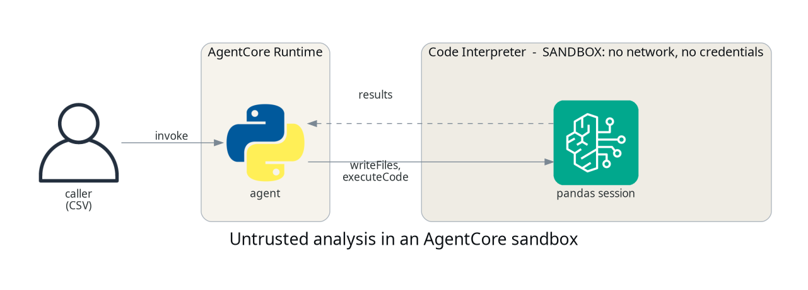

Letting an agent run code, without letting it run loose
TL;DR;
How to give an agent a real Python sandbox with AgentCore Code Interpreter, so it can reconcile a customer's upload against their orders and attach the findings to the case before a person reviews it, and what the sandbox does and does not have access to.
SOURCE CODE - All code for this post is available at: https://github.com/levantar-ai/demos/tree/main/agentcore/04-builtin-tools
Longer version
This series is building one thing, the order support agent for Brightwell, a small online retailer of outdoor kit that ships with DPD and Royal Mail. Post 02 gave it a tool that looks orders up. Post 03 gave it memory. This post gives it a job those two were waiting for.
A customer writes in saying they were charged twice in March, and attaches the charges export from their account page. Ask a language model to read that and say what went wrong and it will produce an answer that looks right. Give it somewhere to actually join the export against the orders on the account and it produces findings you can check, from code you can read, over data you can point at. That is the agent's job here. Not to settle the complaint, but to do the working and attach it to the case, so the person who picks it up starts from the finding rather than from the email.
There are two inputs here and they are not alike. The orders come from Brightwell's own system, fetched by the agent through the gateway, and they are trusted. The export came from the customer, and it is not. It is a file you did not produce, in a format you are taking on faith, and parsing it with pandas inside your agent's own process puts a parser you did not write, working on data you do not control, right next to your credentials. Go a step further and execute model-generated code there and the exposure is worse again.
AgentCore Code Interpreter is a managed sandbox for exactly this. Your agent writes files into a session, runs code there, and reads results back as text. The customer's export goes in because it has to be parsed somewhere safe. Brightwell's orders go in because the join needs them, not because they are suspect. This demo keeps the code fixed and author-written, so what is being isolated is the handling of the untrusted upload, which is the common case; the same mechanism is what you would use for model-generated code, with more input and output controls on top. This post wires one up, gives it the reconciliation to do, and then pokes at the walls.

1 - The sandbox
One resource, and the network mode is the control this post turns on:
resource "aws_bedrockagentcore_code_interpreter" "sandbox" {
name = "demos_agentcore_04_interpreter"
description = "Sandboxed pandas analysis for the demos series"
network_configuration {
network_mode = "SANDBOX"
}
}
SANDBOX means the session gets no outbound internet access. The other
option is PUBLIC, which gives the sandbox outbound internet access, and
you want
to be deliberate about choosing it, because that is the mode where code
running in the session could reach the network on its own. The threat is
the code that executes, whether you wrote it or a model did, not the CSV
sitting on disk.
NOTE:
SANDBOXis the egress control, not the whole boundary. IAM decides who can start and invoke a session, you decide what data goes into one, and your agent decides what comes back out to the caller. Isolating the network does not make everything in the session safe to return.
The runtime role gets the three actions the agent actually calls, scoped to this one sandbox:
{
Sid = "CodeInterpreter"
Effect = "Allow"
Action = [
"bedrock-agentcore:StartCodeInterpreterSession",
"bedrock-agentcore:InvokeCodeInterpreter",
"bedrock-agentcore:StopCodeInterpreterSession"
]
Resource = aws_bedrockagentcore_code_interpreter.sandbox.code_interpreter_arn
}
2 - The agent
The agent's job is to fetch the customer's orders, move both files in, run code, and read the findings out. It never parses the upload itself:
def _call(session_id, name, **arguments):
response = client().invoke_code_interpreter(
codeInterpreterIdentifier=os.environ["CODE_INTERPRETER_ID"],
sessionId=session_id,
name=name,
arguments=arguments,
)
return _consume(response)
def write_files(session_id, path, text):
return _call(session_id, "writeFiles", content=[{"path": path, "text": text}])
def execute_code(session_id, code, language="python"):
return _call(session_id, "executeCode", code=code, language=language)
def analyse(charges_csv, orders_json, session_id):
write_files(session_id, "charges.csv", charges_csv)
write_files(session_id, "orders.json", orders_json)
return execute_code(session_id, RECONCILE)
orders_json is what list_orders returned through the gateway for this
customer, so the agent fetches it with its own credentials and hands the
result into the sandbox as a file. The sandbox does not receive the agent's
gateway credentials, it receives the reconciliation code and two input
files. RECONCILE is the pandas that joins them:
paid = charges.groupby("order_id")["amount"].agg(paid="sum", times="count").reset_index()
joined = orders.merge(paid, on="order_id", how="outer", indicator=True)
for _, r in joined.iterrows():
oid = int(r["order_id"])
if r["_merge"] == "right_only":
findings.append(f"order {oid}: charged {r['paid']:.2f} but there is no such order on this account")
continue
if r["_merge"] == "left_only":
continue
diff = round(r["paid"] * 100) - round(r["total"] * 100)
if diff == 0:
continue
taken = f"charged {int(r['times'])} times totalling {r['paid']:.2f}" if r["times"] > 1 else f"charged {r['paid']:.2f}"
if diff > 0:
findings.append(f"order {oid}: {taken} against a total of {r['total']:.2f}, refund due {diff / 100:.2f}")
else:
findings.append(f"order {oid}: {taken} against a total of {r['total']:.2f}, {-diff / 100:.2f} outstanding")
Three cases. A charge with no order behind it, more taken than the total,
less taken than the total. It works in pence and only the difference
decides anything, so two captures that add up to the total are a split
payment rather than a fault. Plain pandas, nothing clever, which is rather
the point. The agent then writes the whole report into memory against the
customer, so a later session can recap it.
NOTE:
actoris whatever the caller put in the payload. This demo trusts it, which means the agent will fetch any customer's orders for anyone who asks with the right id. That is fine for a demo and unacceptable for a retailer, and it is exactly the gap post 05 closes, where inbound authentication binds the customer to the request rather than to a field in it.
The service exposes one data-plane call, invoke_code_interpreter, which
takes a tool name and an arguments blob rather than a method per tool. That
is the shape of an MCP tools/call, the same protocol the Gateway spoke in
post 02, and it exists so an agent can forward a model's tool choice
straight through without a dispatch table. The useful names are
writeFiles, executeCode, executeCommand, readFiles and listFiles.
This agent's code is fixed, so it gains nothing from the dynamic shape and
wraps the two tools it uses as functions with named parameters. That also
puts the stream handling in one place. Responses arrive as an event stream,
and a tool that fails sets isError inside that stream rather than raising,
so _consume drains every call and raises on isError. Skip that and a
failed run looks exactly like a successful empty one.
Sessions are the thing to be careful with, because one lives until its
timeout whether or not you are still using it. The agent opens a session,
works in it, and stops it in a finally so a failed run cleans up too:
def session_for(interpreter, name):
resp = client().start_code_interpreter_session(
codeInterpreterIdentifier=interpreter,
name=name,
sessionTimeoutSeconds=900,
)
return resp["sessionId"]
session_id = None
try:
orders_json = self.orders(actor)
session_id = self.start(interpreter, "reconcile")
report = self.run(charges_csv, orders_json, session_id)
finally:
if session_id is not None:
self.stop(interpreter, session_id)
NOTE: files land in the session's working directory, not in
/tmp. Write todata.csvand readdata.csv, and resist the urge to be clever with absolute paths.
NOTE: sessions outlive the call that created them, up to
sessionTimeoutSeconds, and a sandbox with live sessions refuses to delete (ConflictException: ... cannot be deleted. There are 2 active sessions), so stop sessions rather than waiting them out.
3 - Reconciling a customer's charges
The dataset behind the tool is Brightwell's orders, three hundred of them
across forty customers, generated by scripts/make_orders.py so it is the
same every time. Customer c-1007 has eight. Their export has nine
charges, and two of them are wrong:
python3 -c 'import json; print(json.load(open("payload.json"))["csv"])'
# order_id,charged_at,amount
# 1014,2026-01-12T08:34,125.00
# 1074,2026-02-20T15:35,45.95
# 1090,2026-03-07T10:48,142.60
# 1090,2026-03-07T10:50,142.60
# 1094,2026-03-08T14:35,129.00
# ...
# 1275,2026-08-01T12:24,179.80
aws bedrock-agentcore invoke-agent-runtime \
--cli-binary-format raw-in-base64-out \
--agent-runtime-arn "$ARN" \
--runtime-session-id billing-session-000000000000000001 \
--payload file://payload.json \
--region us-east-1 /dev/stdout \
| python3 -c 'import sys,json; print(json.JSONDecoder().raw_decode(sys.stdin.read())[0]["result"])'
The CLI writes the response body and then its own metadata to the same stream, hence the decoder that stops at the end of the first object.
8 orders on the account, 9 charges in the export
2 discrepancies
- order 1090: charged 2 times totalling 285.20 against a total of 142.60, refund due 142.60
- order 1275: charged 179.80 against a total of 174.80, refund due 5.00
The double charge is the one the customer noticed, a retried payment that went through both times, two minutes apart. The second they had not, an order charged before a discount applied. Both come from joining the customer's file against the retailer's record, which is a thing a model cannot do by reading the file and a thing you would not want it doing next to your credentials.
Nothing has been refunded. The agent has no tool that could, lookup_order
and list_orders only read, and the report is what a support agent would
otherwise have spent the first half hour of the case producing by hand. It
goes into memory against the customer, which is where the case history
lives for whoever reviews it, and a person decides what happens next.
Pandas was already present in the sandbox image at the time of writing, so there was no dependency management to do for straightforward analysis. That is an observation about the managed image rather than a documented contract, so check what you actually need is there before you depend on it.
4 - Testing the walls
The interesting part is what happens when code in the sandbox tries to
reach out. Running this inside a SANDBOX session:
import urllib.request
urllib.request.urlopen("https://example.com", timeout=8)
blocked: URLError <urlopen error [Errno -2] Name or service not known>
The lookup failed at name resolution rather than at connect time. Next, a look for credentials in the environment and a probe of the instance metadata address:
keys = [k for k in os.environ if "AWS" in k or "TOKEN" in k]
urllib.request.urlopen("http://169.254.169.254/latest/meta-data/", timeout=5)
aws-ish env vars: []
metadata request denied: HTTP 401
Read that 401 carefully, because it is weaker evidence than it looks. A 401
is an answer rather than a refusal to answer, and IMDSv2 returns exactly
that to an unauthenticated GET because no token has been fetched first. The
environment scan is narrow in the same way, since credentials need not sit
in a variable whose name contains AWS. Treat both as corroboration rather
than proof.
The guarantee to design against is the documented SANDBOX behaviour, which
is that the session has no outbound internet egress. What you get is code
running on untrusted data with no outbound route to the internet. What the
session hands back still travels through your agent, so what reaches the
caller stays your decision.
Conclusion
A managed sandbox turns "the model thinks you were probably charged
twice" into a refund figure a person can act on, and it moves the
processing of untrusted data off your agent's microVM into a session with
no outbound internet egress. The agent adds context to the case. It does
not close it.
It is also the first post where the series does one job end to end, the
gateway from post 02 supplying the orders, the sandbox doing the join and
memory from post 03 keeping the record. One Terraform
resource, three IAM actions and a couple of API calls, with SANDBOX as
the egress control and IAM, session lifecycle and what you return to the
caller making up the rest of the boundary.
The next post gives the agent an identity of its own, inbound authentication for callers and outbound OAuth so it can act on a user's behalf.
References: